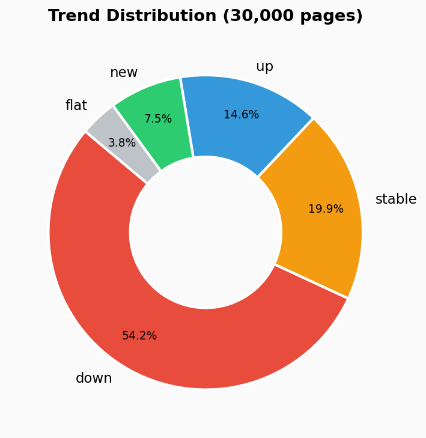
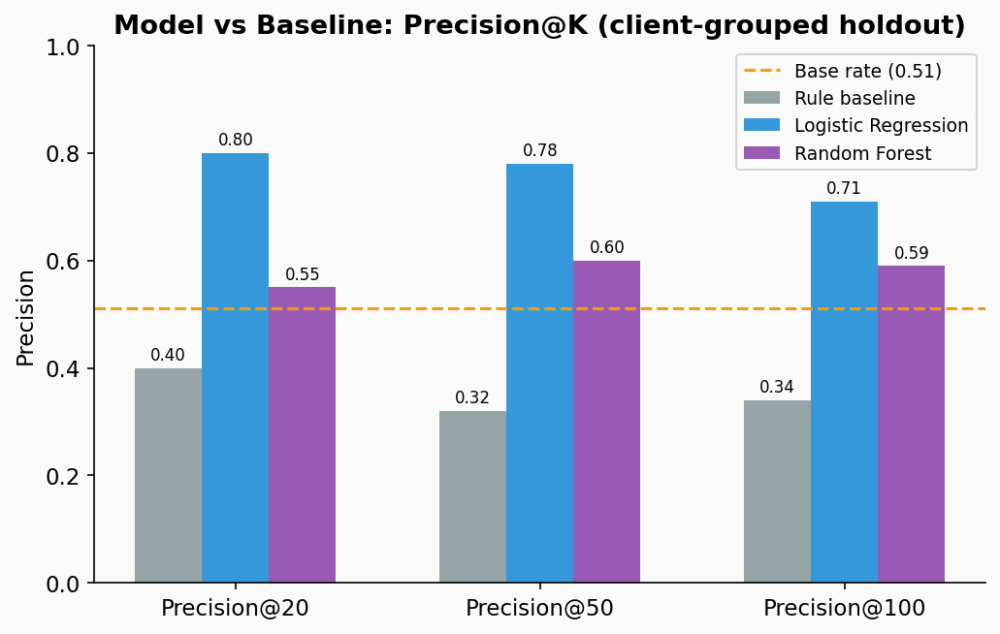
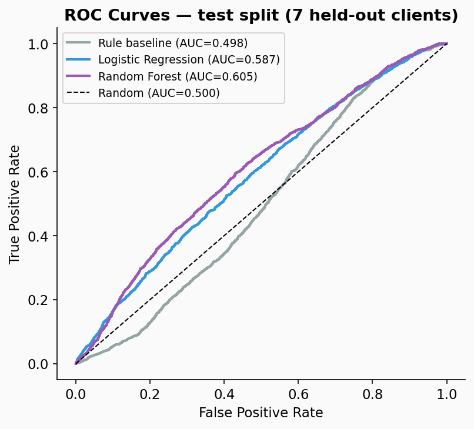
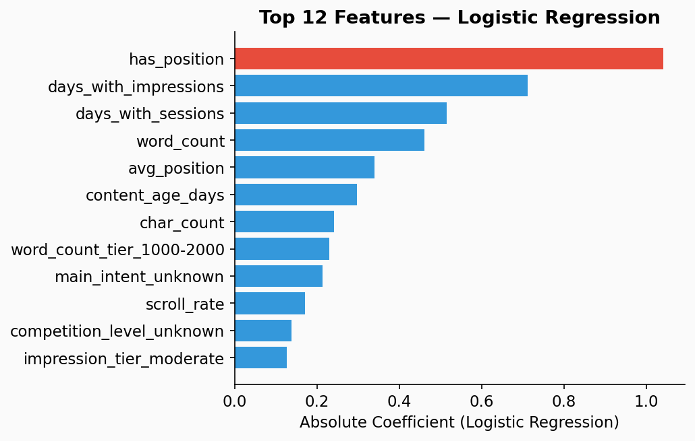
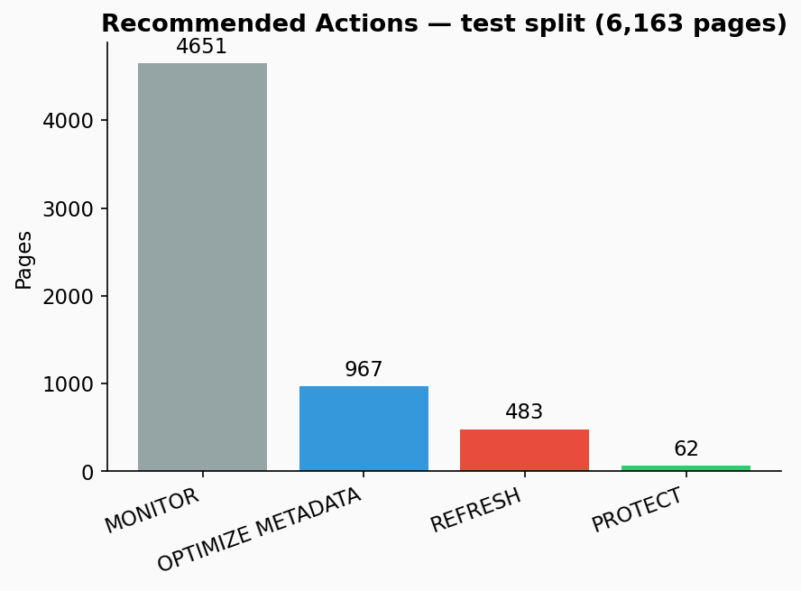

1. Introduction / Problem Statement
Search-visible content decays. Pages that once ranked well accumulate staleness — competitors publish fresher material, search intent shifts, and Google's systems quietly de-prioritize pages that no longer satisfy user queries. The problem for a content team isn't knowing that decay happens — it's knowing which pages to fix first.
A typical portfolio has hundreds or thousands of pages. Editorial capacity is finite. Without a ranked signal, teams either work alphabetically, rely on gut feel, or respond reactively to traffic alerts that arrive too late. This project builds a scored, ranked priority queue — with explicit reason codes — to give a content strategist or SEO specialist a defensible starting point for their next review sprint.
The unit of analysis is a single content item (one row in the dataset). The output is a model probability score and a recommended action. A human reviewer reads the ranked list and decides what to do; the model does not automate the editorial decision.
2. Data
Source: FlyRank ML Internship Dataset — starter release.
File: content_refresh_anonymized.csv
Size: 30,000 rows × 44 columns; 32 pseudonymized clients; trailing 90-day search and engagement metrics per content item.
All client names, domains, and URLs are anonymized; no private identifiers appear anywhere in this analysis.

Excluded columns — and why
trend_direction,trend_pct— these ARE the label. Using them as features would be direct leakage.impressions_last_30d,clicks_last_30d,sessions_last_30d, and their_prev_30dcounterparts — these are the raw numbers that define the label's trend window; including them would leak the outcome direction into features.content_id,client_id— pseudonymous identifiers; used only for grouping/splitting.provider_used,model_used— internal operational metadata, not search signals.
Known data quirks handled
avg_position = 0means "no GSC data", not rank zero. Recoded to NaN; a binaryhas_positionflag is added as a feature — this turned out to be the single strongest predictor in the model.- Rate columns (
ctr,engagement_rate,scroll_rate,ai_traffic_pct) are ×100 percentages — treated as-is; no rescaling. - Missing categoricals filled with
"unknown"(not mode-filled) to avoid injecting a hidden category signal.
3. Methodology
Label definition
is_declining_label = 1 when trend_direction == 'down'
(impressions fell >20% in the last 30 days vs. the prior 30 days).
This is a proxy for "needs review" — not a direct measure of content quality.
A page can decline due to seasonality, a SERP layout change, or a competitor gaining a featured snippet.
The model identifies decline; it does not diagnose the cause.
Baseline rule score
Built before any model training. Plain-language: "Prioritize pages with traffic that haven't been updated recently and rank on page 1–2 — with a small boost for thin content."
score = 0.40 × visibility_percentile_rank
+ 0.30 × freshness_risk_percentile_rank
+ 0.25 × position_opportunity_rank
+ 0.05 × depth_gap_rank
No fitted parameters. Any editor can read and audit this rule.
Models trained
- Logistic Regression — readable starting point; coefficients are directly interpretable. Uses
class_weight="balanced"andStandardScaler. - Random Forest — adds non-linear interactions; justified only if it beats logistic regression on the same split. 200 trees, max depth 10, min_samples_leaf 25.
Both use random_state=42 for full reproducibility.
Validation design — client-grouped holdout
GroupShuffleSplit on client_id, test_size=0.2, random_state=42.
Result: 23,837 rows / 25 clients for training; 6,163 rows / 7 clients for testing.
Zero client overlap — confirmed in code output.
Leakage checks passed
trend_directionandtrend_pctexcluded from all feature matrices — verified in code.- 30-day window columns excluded — they define the label's trend window.
has_positionis derived fromavg_positionbefore the label is computed — safe.- Top features (position awareness, impression depth, content age) have a plausible causal story — no suspiciously perfect predictor.
4. Results
| Method | Precision@20 | Precision@50 | Precision@100 | ROC-AUC |
|---|---|---|---|---|
| Base rate (random pick) | 0.511 | 0.511 | 0.511 | 0.500 |
| Rule baseline | 0.400 | 0.320 | 0.340 | 0.498 |
| Random Forest | 0.550 | 0.600 | 0.590 | 0.605 |
| Logistic Regression ✓ best | 0.800 | 0.780 | 0.710 | 0.587 |
All metrics computed on the same 7-client holdout (6,163 rows). Base rate (test split) = 0.511. A precision@K score above the base rate means the model is ranking declining pages to the top more often than chance.


What the model leans on

has_position) — pages
with measurable search presence carry a fundamentally different risk profile.
Content age, impression depth, and session consistency round out the top signals.
Error analysis
Of the top 50 ranked pages, 11 were wrong picks (not actually declining). Reviewing these: they cluster at borderline signal combinations — moderate impressions, ambiguous positions, neither clearly stable nor clearly declining. This is a healthy failure mode: errors sit at the decision boundary, not on some structurally leaked shortcut.
The rule baseline performed below the base rate at Precision@50 (0.32 vs. 0.51). This is the telling result: the obvious rule (visible + stale + slipping position) actively misranks pages relative to random, because those signals are not the primary discriminators of 30-day impression decline on this data.
5. Limitations & Honest Framing
- The label is a proxy, not ground truth. A 30-day impression drop captures decline. It cannot distinguish a genuine content quality problem from a SERP layout change, seasonality, or a competitor's featured snippet. The model surfaces pages associated with measured decline; it does not diagnose the cause.
- Observational, not causal. All results are directional and associative. This work cannot claim that refreshing a flagged page will cause its rankings to recover. The model identifies correlation patterns in a flat snapshot; it does not model the counterfactual.
- Small client count. The test set holds out 7 of 32 clients. With that sample size, performance estimates have meaningful variance — a different holdout seed could shift Precision@50 by ±0.05–0.10. Results are labeled directional throughout.
- No temporal split. A time-aware split (train months 1–12, test months 13–17) would be the production-grade approach. The starter dataset is a single flat snapshot; a client-grouped split is the appropriate choice here, but it cannot guard against all forms of temporal leakage.
- Starter dataset only. This analysis used the 30k-row anonymized starter CSV. The full 79M-row warehouse would allow per-client time-series validation, per-client history depth filtering, and stronger generalization tests.
- Action codes are heuristic thresholds. The REFRESH / PROTECT / OPTIMIZE METADATA / REVIEW CONTENT / MONITOR assignments are fixed-threshold rules applied on top of model scores. They are evidence-based starting points for a human reviewer — not automated editorial decisions.
6. Ranked Recommendations
Each page in the scored queue receives one of five actions, assigned by combining the model probability with threshold rules on visibility (impressions), position, CTR, engagement, and freshness. Actions are listed in priority order — REFRESH pages should be addressed first.
🔴 REFRESH
Trigger: model score ≥ 0.70 AND impressions ≥ 500.
Meaning: High decline probability with enough visibility that recovery is worth the effort.
Review content quality, keyword alignment, and freshness. Prioritize by model score descending.
🟢 PROTECT
Trigger: model score < 0.25 AND impressions ≥ 1,000 AND engagement ≥ 3%.
Meaning: Stable, visible, engaged pages. Don't touch without strong reason.
Schedule monitoring to catch early drift.
🔵 OPTIMIZE METADATA
Trigger: CTR < 0.5% AND position ≤ 10 AND impressions ≥ 300.
Meaning: Page ranks but doesn't earn clicks. Review title tag, meta description,
and schema markup before touching the content itself.
🟡 REVIEW CONTENT
Trigger: days since update > 365 AND impressions ≥ 200 (not in REFRESH bucket).
Meaning: Stale but still visible. Flag for a light content audit — update facts,
statistics, and internal links before freshness becomes a full decline signal.
⚪ MONITOR
Trigger: all other pages.
Meaning: Signals are ambiguous or visibility is too low for an intervention
to be worth the editorial cost. Set a quarterly review cadence.
*Counts from the 6,163-page test split. Full portfolio counts would scale proportionally.

How to use this in practice
- Export the
action_playbook.csvto your content team's project tracker. - Filter by
action == "REFRESH", sort bymodel_scoredescending. - Work through the REFRESH queue in sprint batches. Treat PROTECT as a "don't touch" watchlist. Run OPTIMIZE METADATA passes before content rewrites (faster, lower risk).
- Re-score after each publishing sprint to update the queue — the model runs in seconds on a fresh data pull.
7. Reproducibility
All code is in the repo linked below. To reproduce from a fresh clone:
git clone https://github.com/Tanvir-Sheikh-R/From-flyrank-starter cd From-flyrank-starter pip install -r requirements.txt # Run the capstone notebook top-to-bottom: jupyter nbconvert --to notebook --execute work/notebooks/capstone.ipynb
- Random seed:
SEED = 42— set at the top of all code cells. Same seeds → same numbers. - Split:
GroupShuffleSplit(n_splits=1, test_size=0.2, random_state=42)— deterministic. - Data:
data/raw/content_refresh_anonymized.csv— ships in the repo. - Notebooks: capstone.ipynb, w01, w02, w05, w07
8. Acknowledgments & Data Credit
Built on the FlyRank ML Internship Dataset — a real, anonymized search performance dataset provided by FlyRank for machine learning education and research. All client names, domains, and URLs in the dataset are pseudonymized. No private or identifying information appears in this analysis or in the public repository.
This capstone was completed as part of the FlyRank ML Internship Program (2026). The framing, feature engineering, modeling choices, error analysis, and all written claims are the author's own work.